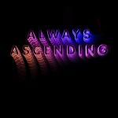
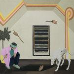

Music Reviews
-
Screaming Females All At Once
All At Once is not just a salvo against the forces of instant gratification and escapism. It also describes the breadth of music on the trio's latest album, from their punk roots to their ever-expanding sound.
Joe Marvilli steps outside with Screaming Females... -
Camp Cope How to Socialise & Make Friends
The Melbourne band return with one of the most urgent and important indie rock records of the year.
Matthew Smith reviews... -

Keiji Haino & SUMAC American Dollar Bill – Keep Facing Sideways, You're Too Hideous to Look at Face On
Keiji Haino and SUMAC partner up and make quite a racket.
Sean Caldwell reviews... -

Soccer Mommy Clean
Sophie Allison, the 20-year-old singer-songwriter who goes by the pseudonym Soccer Mommy, confronts her internal contradictions with a helplessness that defines her age.
Juan Edgardo Rodríguez reviews... -
U.S. Girls In A Poem Unlimited
U.S. Girls’ In A Poem Unlimited is a pop record smeared with running, blue mascara.
Sean Caldwell reviews... -

Franz Ferdinand Always Ascending
On Always Ascending, Franz Ferdinand widen their sound to cinematic disco, bringing an even dancier vibe to their music.
Joe Marvilli feels the love go... -

Palm Rock Island
On their second full-length, the Philadelphia post-punk band equally embrace and rile against indie rock as a conservative movement.
Juan Edgardo Rodríguez reviews... -

Hookworms Microshift
The fiercely independent Yorkshire quintet emerges from its psychedelic haze to reveal heart and creativity in equal measure.
David Coleman reviews... -

Ezra Furman Transangelic Exodus
Ezra Furman's queer outlaw saga proves to be a triumph of a road trip.
Matthew Smith reviews -
EMA Outtakes from Exile
This collection of outtakes not only contains some great new songs, but brings new elements that highlight EMA's ongoing evolution as an artist.
Joe Marvilli returns to the outer ring...